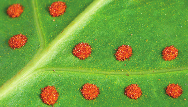

¿Qué características de las plantas resaltarías para distinguirlas de los animales?
Dibuja una planta y rotula cada una de sus partes.
¿Te parece correcto afirmar que las plantas no se mueven? Explica tu respuesta.
Indica dos características de las plantas que también estén presentes en los animales.
Busca y anota el significado etimológico de los términos briofita y pteridófita.
Indica cuáles de estos seres vivos son plantas: acebuche, lechuga de mar, grama, anémona, cebada y rebollo.
Escribe el nombre de ocho plantas y clasifícalas como briofitas, pteridófitas, gimnospermas o angiospermas.
¿Qué rasgo comparten estas dos plantas?
¿Qué tienen en común los helechos y las plantas con flores?
Señala tres características que comparten estas parejas de plantas.
Elabora una presentación que muestre en qué se parecen y en qué se diferencian las gimnospermas y las angiospermas.
Explica la finalidad de que las semillas de algunas plantas estén encerradas en frutos.
Relaciona en tu cuaderno por su parecido en cuanto a función y forma las estructuras de las dos columnas.
Emite una hipótesis que explique por qué los musgos son de menor tamaño que las plantas del resto de los grupos.
¿Cómo se llaman las estructuras que se observan en la imagen? ¿Qué contienen?
¿Qué tiene en común la reproducción de los musgos y la de los helechos?
Busca información y elabora una presentación sobre los líquenes como indicadores de los niveles de contaminación atmosférica. Indica las fuentes consultadas.
Explica las diferencias entre los helechos y los musgos.
Copia en tu cuaderno y relaciona cada órgano con su función.
Mantiene derecha a la planta.